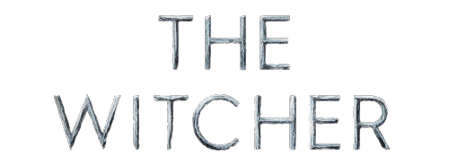
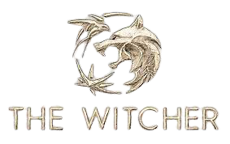
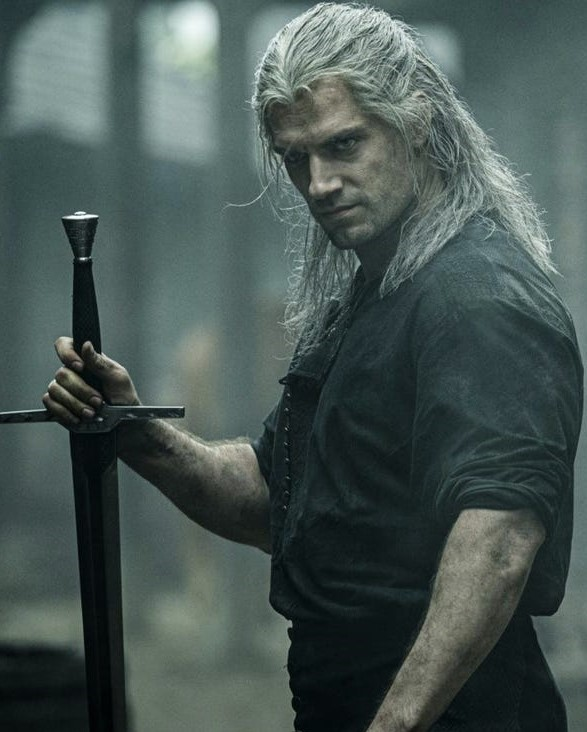
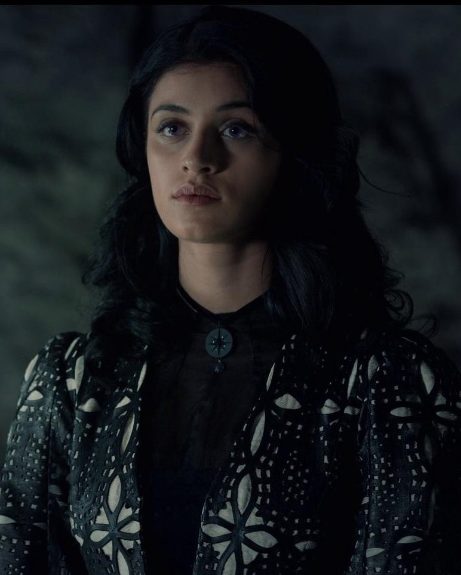
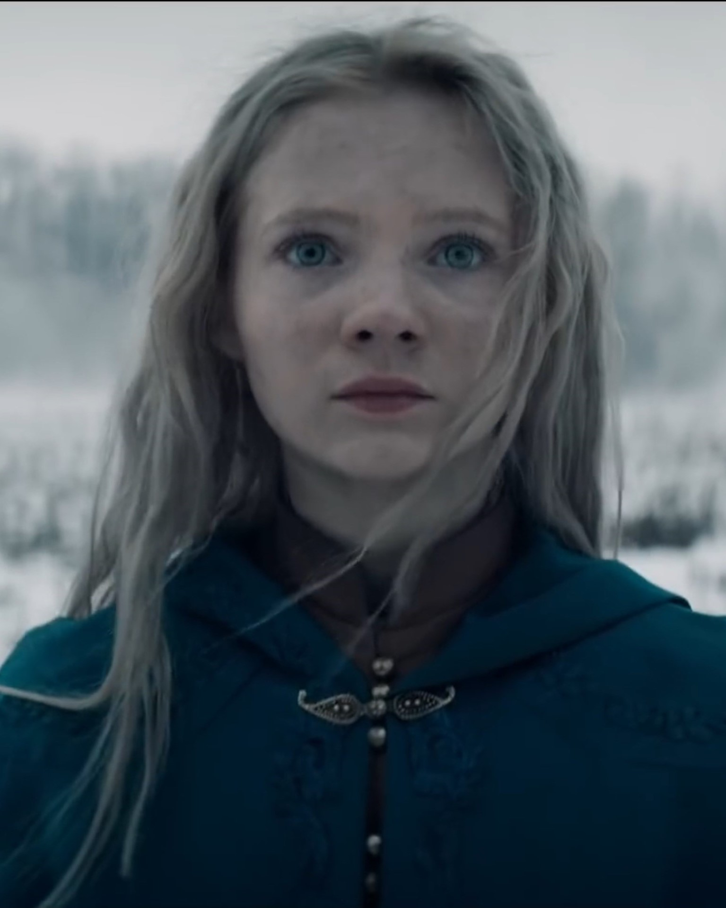

위쳐
2019 | 청불 | 시즌 1개 | TV 프로그램·액션 & 어드벤처
세계적인 판타지 대작이 넷플릭스 시리즈로 다시 태어난다. 어둠과 위험의 세계, 진실은 어디에 있을까. 운명으로 묶인 그들. 위쳐와 마법사, 홀로 남은 공주의 싸움이 시작된다.
주연:헨리 카빌,애니아 철로트라,프레이아 앨런
크리에이터:로런 슈미트 히스릭
크리에이터:로런 슈미트 히스릭
- 저장 가능 콘텐츠
오프라인 시청
- TV 프로그램·판타지,
- 도서 원작 TV 프로그램,TV 드라마,
- 미국 TV 프로그램,
- TV 프로그램·액션 & 어드벤처
장르
출연
| 헨리 카빌 | 애니아 철로트라 |
| 조디 메이 | 미안나 버링 |
| 이먼 패런 | 미미 카이사 |



